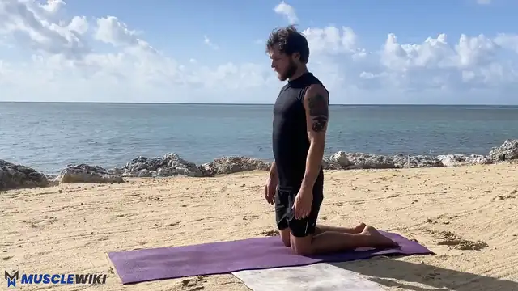
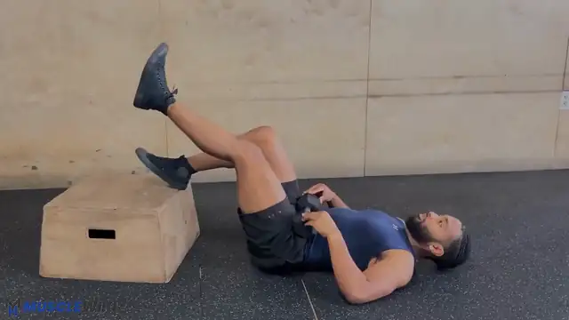
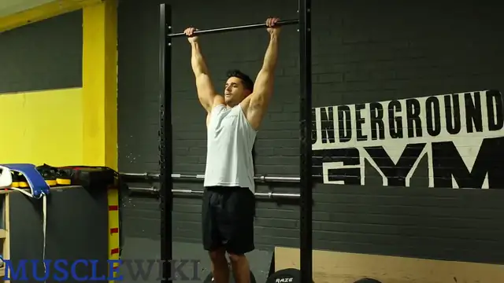
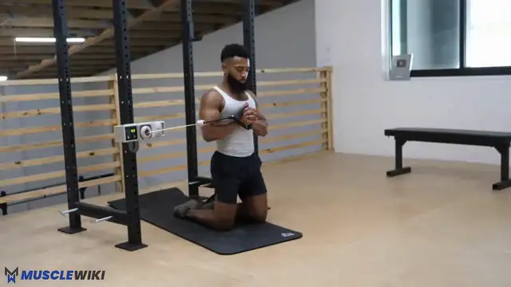
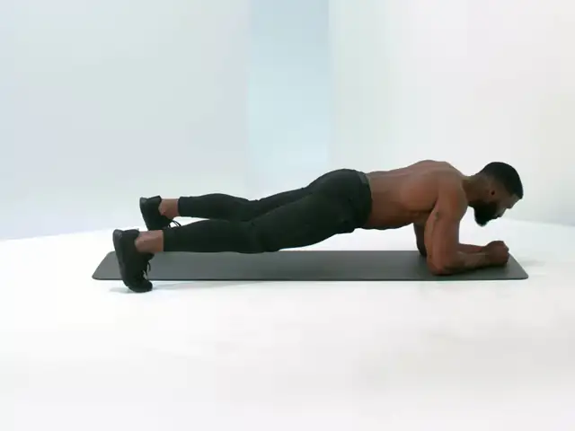
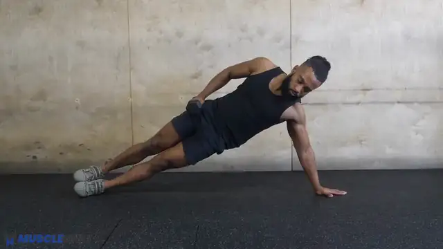
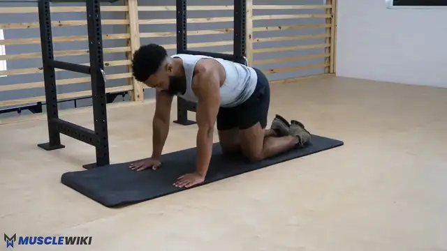

-


0 Warm-up
~1:30
Spine, glutes, shoulder blades
Feel: Warm and switched on, not tired.
Do in order
- Cat-camel × 6 slow cycles, gentle, no forcing the end range
- Glute bridge × 6 with a posterior tilt, 2 s squeeze at the top
- Scapular pull-ups × 5 on the bar: hang, pull the shoulder blades down, no elbow bend
Notes
The postural routine already handled mobility; this is a short primer so the first superset starts with the right muscles awake.
-

1 Captain's Chair Knee Raise
3×8-12
Lower abs (anti-extension, hip-flexion control)
Feel: Deep and low, under the belt line. Not the front of the hips.
How to
- Back flat on the pad, shoulders pressed down away from the ears.
- Think “curl the tailbone up and toward the chest”: the knees are just along for the ride; lift the pelvis off the pad.
- Lower slowly, no swinging. Stop at hip height if the lower back starts to arch.
Notes
Progression: 2 s top hold → slow 4 s lowering → hanging knee raise → hanging straight-leg raise. Hold off on straight-leg versions until the hip flexors loosen: they bring high rectus femoris activity and ~3000 N of spine compression.
-

2 Half-kneeling Pallof Press
3×8 per side, 3 s hold
Obliques (anti-rotation) + down-leg glute
Feel: Obliques on the side away from the band, and the glute of the down leg.
How to
- Band anchored to the tower upright at chest height. Kneel tall, inside knee down; squeeze that glute so the hip flexor opens (posterior tilt).
- Press straight out from the sternum and don't let the band twist you: hands stay at midline.
- Ribs down, breathe out on the press, then hold 3 s.
Notes
Progression: tall kneeling → half-kneeling → split stance → feet together → longer holds or more band tension.
Popular but thinly evidenced: no outcome trials, only lab measures of how hard each stance is. Half-kneeling with a glute squeeze also stretches the down-leg hip flexor, which suits your pelvic tilt.
-

3 Body Saw (sliders)
3×6-10 slow
Whole front of the trunk + serratus (anti-extension)
Feel: The whole front of the trunk, plus the upper ribs and armpit area.
How to
- Forearm plank, feet on sliders or towels, posterior tilt: “zip up” the glutes and pull the ribs down.
- Push the floor away with the forearms (no shoulder sag) and rock back only as far as the lower back stays flat.
- If the hips sag or the back arches, shorten the range.
Notes
Why this one: high abdominal activation in the most spine-sparing way of the exercises tested, plus strong serratus work that helps rounded shoulders (Callaghan & McGill 2015).
Progression: longer range → slower tempo → buy an ab wheel (~€10–20) once 3×12 strict body saws are easy, and do roll-outs from the knees.
-

4 Side Plank
3×20-30 s per side
Obliques + glute medius (anti-lateral flexion)
Feel: Obliques and the side of the bottom hip.
How to
- Start from the knees or with feet staggered (groin); progress to feet stacked. Elbow under the shoulder, push the floor away.
- Ear, shoulder, hip and knee (or ankle) in one straight line, hips slightly forward. Don't pike back.
- Breathe behind a braced belly. End the set as soon as the hips sink.
Notes
Groin swap (later): once the right groin has been symptom-free for 3–4 weeks, swap one side-plank set for a short-lever Copenhagen plank: 2 × 10–15 s per side, knee on the chair seat, pain at or below 2/10 and settled by the next morning.
-

5 Bird Dog
1×6 per side, 8–10 s holds
Glutes + back extensors (endurance)
Feel: Glute of the extended leg and the back muscles on the opposite side. The low back stays “quiet”.
How to
- Hands under the shoulders, knees under the hips. Brace lightly, about 20–30% effort.
- Kick the heel straight back and reach the hand forward, only to hip and shoulder height. Don't arch.
- Imagine a cup of water on the lower back. Make a fist with the reaching hand.
Notes
Alternative: suitcase carry or march with a 12–20 kg backpack in one hand, 2 × 30–40 m per side. The 2–3 kg dumbbells are too light for it.
About core
A ~20 min session once a week, after the postural routine. It covers what the daily dead bug doesn't: a harder anti-extension move, anti-rotation, side-bending control and back-extensor endurance. Two supersets keep it short: do the pair back to back, then rest. Every front-core exercise uses the same cue, ribs down, tailbone tucked, so the abs work instead of the hip flexors.
Why these exercises, and what was left out (sit-ups, back hyperextensions): Core · Research.
Time Breakdown
| Segment | What | Time |
|---|---|---|
| Warm-up | Cat-camel, glute bridge, scapular pull-ups | ~1:30 |
| Superset A ×3 | Knee raise + Pallof press, 45 s rest | ~8:30 |
| Superset B ×3 | Body saw + side plank, 40 s rest | ~7:30 |
| Finisher | Bird dog | ~2:00 |
| Total | ~19:30 |
Progression Roadmap
| Exercise | Now | Next | Later |
|---|---|---|---|
| Knee raise | Captain's chair, pelvic curl | 2 s top hold, 4 s lowering | Hanging knee raise → straight-leg |
| Pallof press | Half-kneeling | Split stance | Feet together, more band tension |
| Body saw | Short range | Longer range, slower | Ab wheel from the knees |
| Side plank | Knees / feet staggered | Feet stacked | Top-leg raise → Copenhagen (short lever) |
| Bird dog | 8–10 s holds | More reps per side | Suitcase carry with a heavy backpack |
Garmin Connect Setup
Garmin Connect Setup
Synced to Garmin Connect with uv run garmin/sync.py push. Exercise names match the cards above; each one's Garmin exercise is in garmin/exercises.yaml, and the watch notes are built from the card's dose and cues.
Supersets are written as Superset ×3 rows: the rows that share it run as one repeat group, back to back, with the rest after the last one.
Core
| Step | Exercise | Target | Rest |
|---|---|---|---|
| Warm up | Warm-up | Lap Button | — |
| Superset ×3 | Captain's Chair Knee Raise | 10 | — |
| Superset ×3 | Half-kneeling Pallof Press | 8/side | 45s |
| Superset ×3 | Body Saw (sliders) | 8 | — |
| Superset ×3 | Side Plank | 50s | 40s |
| Repeat ×1 | Bird Dog | 6/side | — |